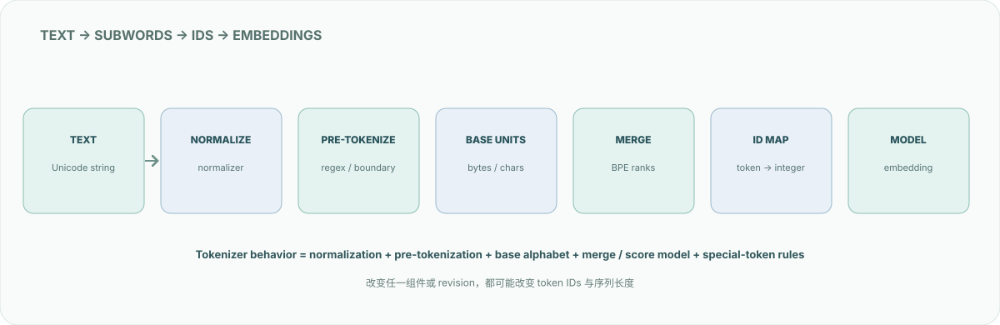
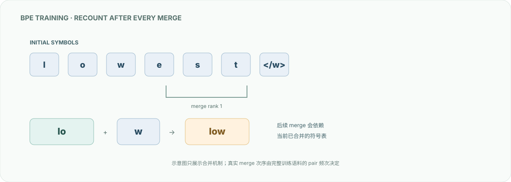

MODULE 19 / LLM DATA ENGINEERING
Tokenization 与 BPE
从相邻符号频次推导 BPE merge，理解 byte-level 编码、预分词、SentencePiece 与 tokenization 质量指标。
模型并不直接“读懂字符串”。它先把文本映射成 token ID，再把 ID 映射成 embedding。为什么 unbelievable 可能是一个 token，也可能拆成多个子词？为什么同样一句话，用不同 tokenizer 会消耗不同的上下文长度和训练 token 预算？本章从 BPE 的合并过程推导到实际编码。
Tokenization 位于文本与模型之间

把 tokenizer 看成一个有版本的编译器更准确：同样的输入文本，在不同预处理规则、merge table 或 special-token 规则下，可能生成不同 token ID 序列。模型的 embedding table 只认识整数 ID；它不知道这些 ID 对应的是英文单词、中文片段还是一个换行符。
BPE：频繁相邻符号逐步合并
Byte Pair Encoding 最初是一种压缩算法。Sennrich et al. 将其用于子词分割：先把词表示成字符序列，再反复统计相邻符号对，合并出现频率最高的一对。合并次数或最终词表大小控制了子词粒度。

令 为词类型集合， 为词 的语料出现频次。当前词表序列中相邻符号对为 ，其加权频次为：
下一次 merge 选择：
把所有非重叠的 a b 替换成新符号 ab，再重新计数。注意：pair 频次是基于当前符号序列动态变化的，不是只在初始字符上计算一次。
从字符 BPE 到 Byte-level BPE
| 设计 | 基础单元 | 未知字符 | 关键边界 |
|---|---|---|---|
| 字符级 BPE | Unicode 字符或预分词后的字符 | 依赖基础字符覆盖，可能需要 UNK | Unicode 归一化、预分词规则 |
| Byte-level BPE | UTF-8 bytes（基础字节表可覆盖任意字节序列） | 字节层面无需额外 UNK 才能表示任意输入 | UTF-8 解码边界、预分词与特殊 token |
| Unigram LM | 候选子词集合及其概率 | 由基础字符 / byte fallback 策略决定 | 概率模型、子词剪枝与可选随机采样 |
GPT-2 风格 byte-level BPE 先用正则表达式把文本切成若干 pre-tokenization pieces，再把每个 piece 编码成 UTF-8 bytes 的可见映射，最后按学习到的 merge ranks 合并。预分词与 BPE 是两个不同阶段：它们共同决定哪些 pair 能被合并。不能把“byte-level”误解成“直接在整个文档上跨任意边界合并字节”。
SentencePiece 的设计目标之一，是直接从原始句子训练子词模型，而不强制依赖外部预分词器；它支持 BPE 和 Unigram 等模型。它与 GPT-2 的 byte-level BPE 在输入边界、空格处理和模型算法上并不相同。
交互实验：看一组词如何逐步合并
下面使用一个小型教学语料 low / lower / lowest。程序会在当前符号序列中重新统计 pair 频次，并按固定的字典序规则处理并列。它只用于展示 BPE 的贪心合并机制，不是 GPT-2 或 tiktoken 的完整预分词实现。
可运行的教学版 BPE 训练器
这段 Python 使用字符作为初始符号，并添加词尾标记 </w>。它展示 pair 统计与 merge rank，但省略了 GPT-2 的复杂正则预分词、byte-to-unicode 映射、special-token 解析和高性能实现。
from collections import Counter
def merge_pair(tokens, pair):
merged, i = [], 0
while i < len(tokens):
if i + 1 < len(tokens) and (tokens[i], tokens[i + 1]) == pair:
merged.append(tokens[i] + tokens[i + 1])
i += 2
else:
merged.append(tokens[i])
i += 1
return tuple(merged)
def train_bpe(words, num_merges):
vocab = Counter(tuple(list(word) + ["</w>"]) for word in words)
merges = []
for _ in range(num_merges):
pairs = Counter()
for tokens, frequency in vocab.items():
for pair in zip(tokens, tokens[1:]):
pairs[pair] += frequency
if not pairs:
break
best_pair = max(pairs, key=lambda pair: (pairs[pair], pair))
merges.append(best_pair)
updated = Counter()
for tokens, frequency in vocab.items():
updated[merge_pair(tokens, best_pair)] += frequency
vocab = updated
return merges
def encode_word(word, merges):
tokens = tuple(list(word) + ["</w>"])
for pair in merges:
tokens = merge_pair(tokens, pair)
return tokens
corpus = ["low", "lower", "lowest", "low", "lowest"]
merges = train_bpe(corpus, num_merges=8)
print(encode_word("lowest", merges))生产 tokenizer 还需要固定训练语料抽样、normalizer、pre-tokenizer、special tokens、byte fallback、merge rank 序列和序列化格式；只保存最终 vocabulary 列表不足以重建行为。
Tokenizer 质量：不要只看“词表覆盖率”
- Fertility：每个词平均被切成多少 token；需要说明词边界定义与语言分词方式。
- Bytes per token / characters per token：适合同一语言和同一内容分布内观察压缩效率；不同语言的 UTF-8 byte premium 不同，不能只凭 bytes/token 判断跨语言公平性。跨语言 token premium 应优先比较平行文本的 token count，并对参考语言归一化。
- Normalized sequence length：控制样本长度差异后比较 token 序列长度。
- Single-token retention rate：常见词或词项能否保持为单 token。
- Cross-lingual parity：平行内容在不同语言中消耗的 token 是否差异过大。
- Round-trip correctness：encode → decode 后能否还原原始文本，特别关注 Unicode、空格、换行和 emoji。
参考资料
- Sennrich, Haddow & Birch (2016), Neural Machine Translation of Rare Words with Subword Units，ACL 2016。
- Arnett et al. (2025), Explaining and Mitigating Crosslingual Tokenizer Inequities，§2.2 explains why bytes/token alone is not a fair cross-language compression metric.
- Kudo & Richardson (2018), SentencePiece: A simple and language independent subword tokenizer and detokenizer。
- Radford et al. (2019), tiktoken implementation and GPT-2 BPE assets。
- Hugging Face Tokenizers documentation and implementation。
- GPT-2 tokenizer documentation：byte-level BPE、vocabulary / merges 与空格行为。